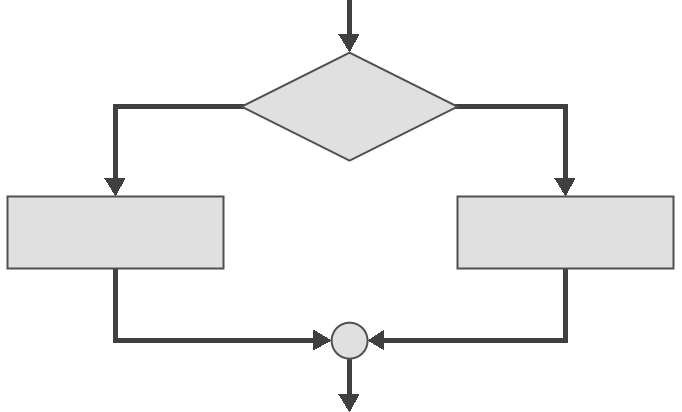

Разграната структура програма¶
Селекција¶
Само се једноставни програми, попут оних у претходном поглављу, решавају наредбама које се извршавају једна за другом, редоследом којим су написане, од врха програма ка дну. Много чешће је потребно контролисати ток програма и дефинисати које ће се наредбе извршити у зависности од неког критеријума, односно услова. Селекција подразумева да се на основу вредности неког израза одређује да ли ће се, односно, која ће се наредба или група наредби извршити, што доводи до гранања у програму.
{kind=link}
Услови, односно управљачки или логички изрази, формирају се обично релацијским операторима. Резултат логичког израза може бити истина, тј. да је израз тачан (енгл. true), или неистина, тј. да је израз нетачан (енгл. false). У програмском језику C вредност тачно представља се бројем различитим од нуле, а вредност нетачно нулом.
У многим програмским језицима постоји логички тип података који се обично
назива bool или boolean са две логичке вредности true и false. Каснијим
C стандардом (C99), логички тип bool са вредностима true и false
дефинисан је у библиотеци <stdbool.h>, али се у овом курсу неће користити.
Поред релацијских оператора, за формирање логичких израза користићеш и логичке операторе, а о релацијским и логичким операторима научићеш више у наредним лекцијама.
Гранања у програму могу се реализовати на више начина:
наредбом
if-else,тернарним условним оператором
?:, илинаредбом вишеструког гранања
switch-case.
Када будеш научио више о релацијским и логичким операторима, наредби гранања, тернарном условном оператору и наредби вишеструког гранања, из Методичке збирке задатака из основа програмирања моћи ћеш да решаваш разне задатке у којима ток извршавања програма зависи од испуњености одређених услова. Задаци у којима се врши гранање сврстани су у поткатегорије на следећи начин: